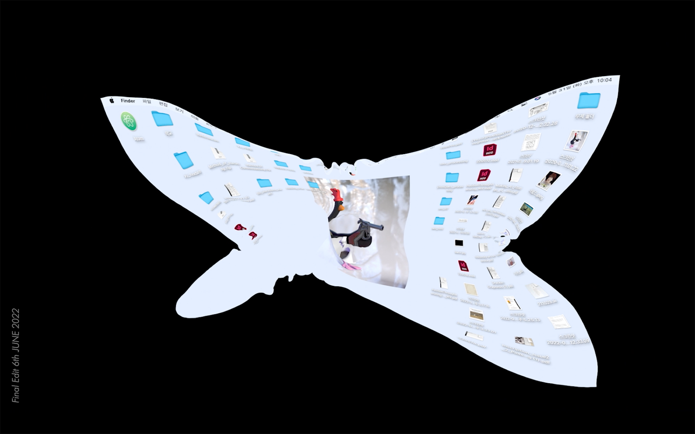
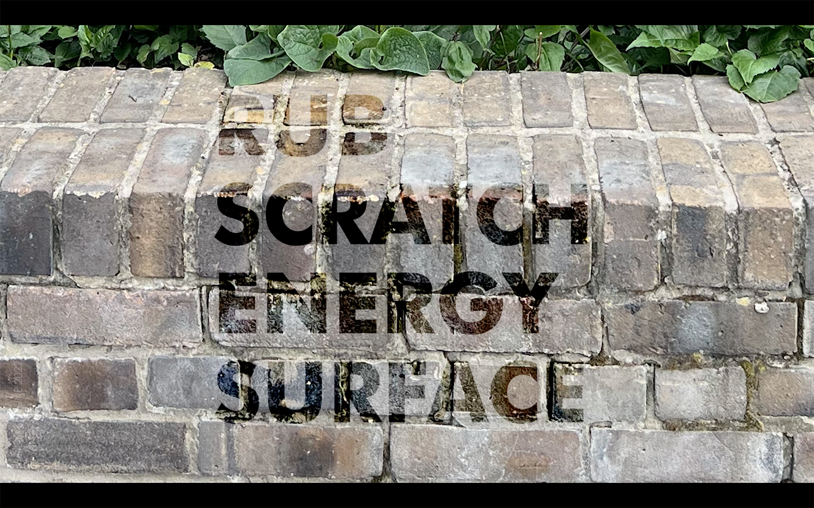
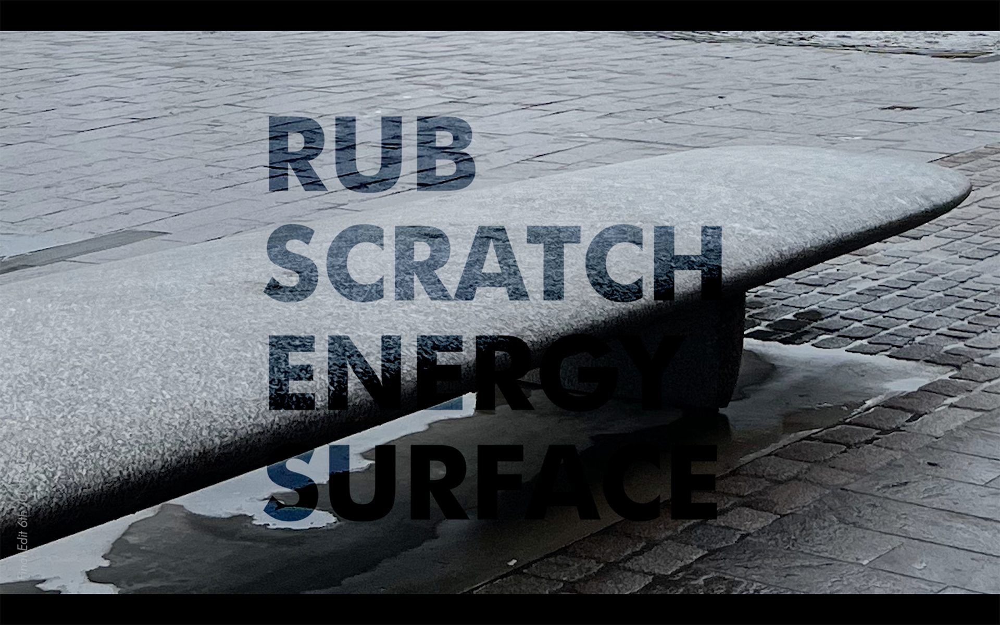
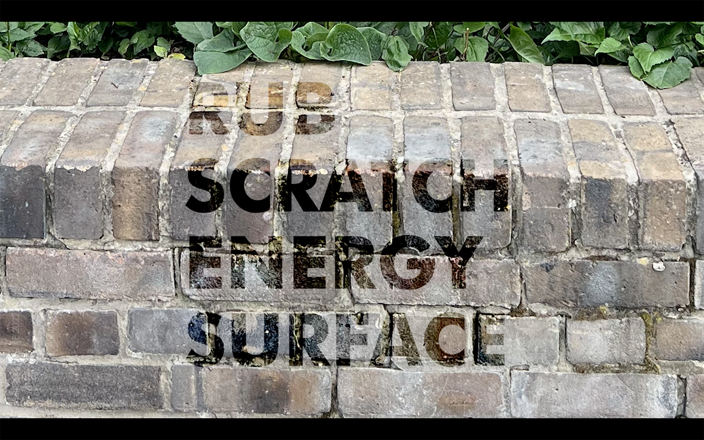
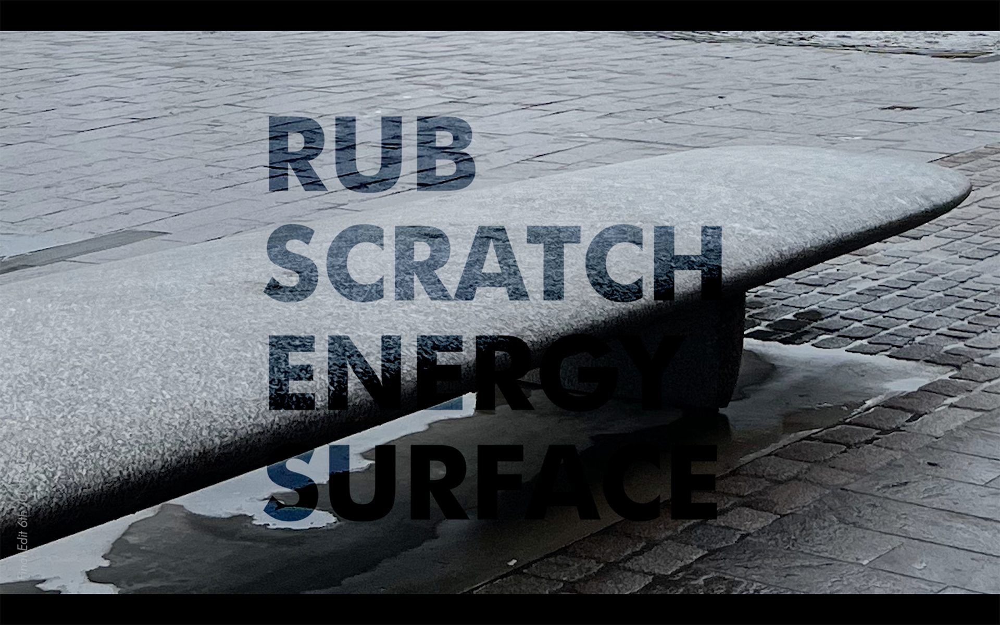
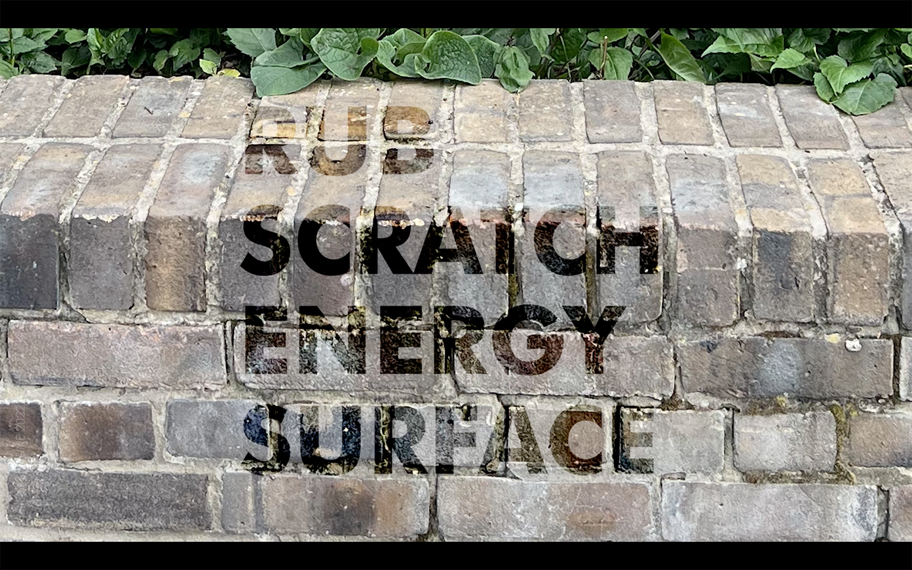
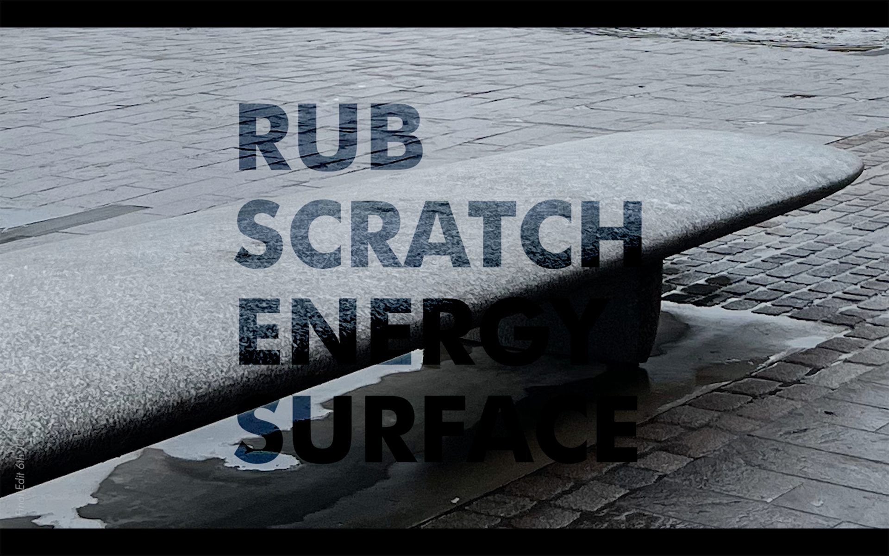

Jackson, P. (2018). Cut and fold techniques for promotional materials. London: Laurence King Publishing.
-

-

-

 





Footnotes
Jackson, P. (2018). Cut and fold techniques for promotional materials. London: Laurence King Publishing.
Gunn, D.P. (1984). Making Art Strange: A Commentary on Defamiliarization. The Georgia Review, Vol. 38(No.1(Spring 1984)), pp.25–33.
Reinfurt, D. (2019). A *new* program for graphic design. Los Angeles: Inventory Press ; New York, Ny.
Josse Pyl (2022). I THINK and I think I’ve THOUGHT a thought. Amsterdam: Roma Publications.
Ahn, K. (2021). The Use of a Chair. [Pencil on paper].
Suh, D.H. (2016). Rubbing/Loving. [Extended Play] Available at: https://art21.org/watch/extended-play/do-ho-suh-rubbing-loving- short/ [Accessed 29 May 2022].
Bruno, G. (2016). Surface: matters of aesthetics, materiality, and media. Chicago London University Of Chicago Press.